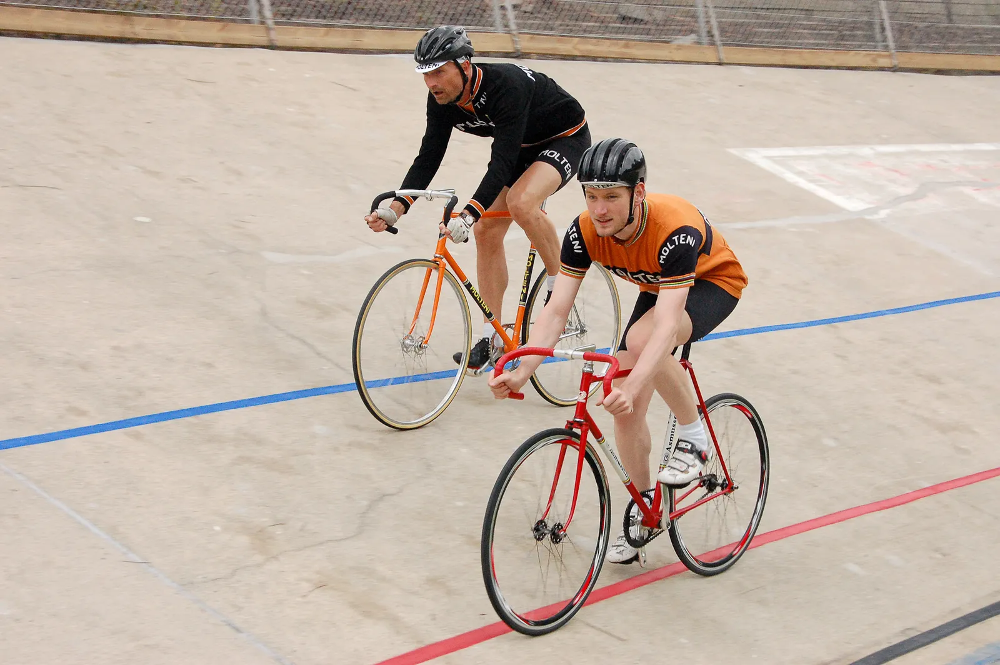
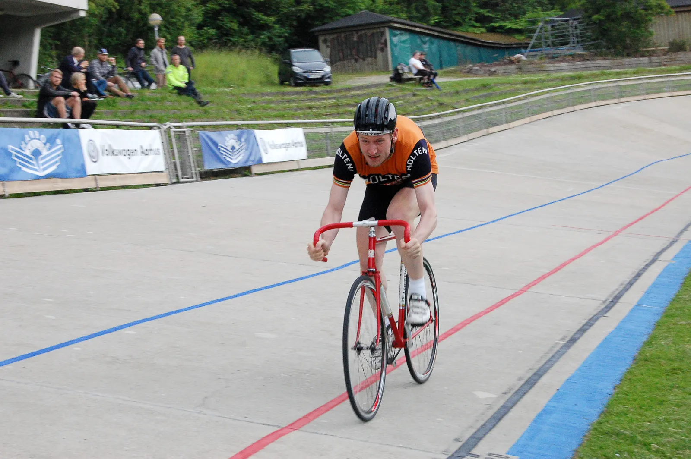
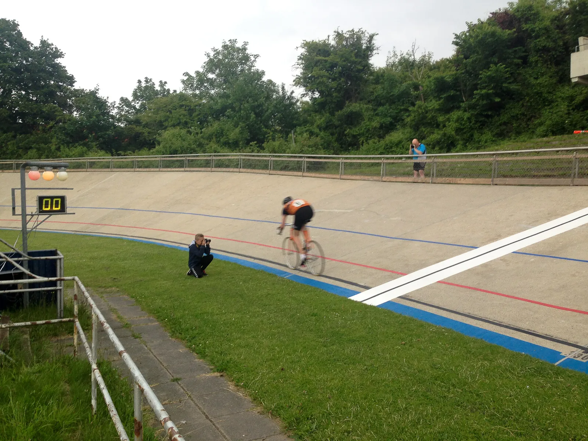
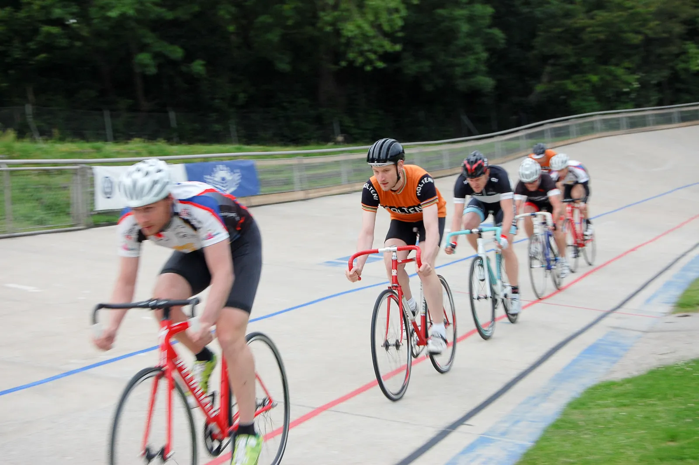
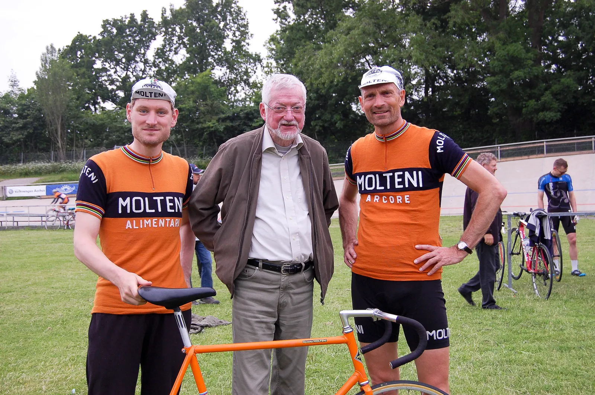

Niels Fredborgs Æresløb 2015: Stærk motionsfelt gjorde det svært

Squadra Molteni stillede til start med Kasper Sørensen og Niles Bjørnsteen ved Niels Fredborgs Æresløb 2015 på Aarhus Cykelbane.
Den gamle nyrestaurerede og klassiske cykelbane stod smuk og lys på en ellers grå og overskyet fredag sommeraften. Klar til aftenens historiske løb til ære for Niels Fredborg, der bl.a. har en plads i Sportens Hall of Fame.
Aftenens menu var: 500 m på tid, linjeløb over 6 omgange og udskilningsløb.
Niels Bjørnsteen stillede op på den smukke orange “Molteni”. En gammel ramme fra 1977, men hjul, som engang har kørt 6-dagsløb da de tilhørte Gert Frank.
Kasper Sørensen stillede op på en smuk klassisk rød Asmussen.

Niels Fredborgs Æresløb startede med 500 m på tid
Det er en djævelsk disciplin: Da det er med dødstart, bruges en helvedes masse energi på at komme op i fart.
Herefter kommer der lige et kort stykke, hvor et flow opleves – men så kommer syren snigende og overskyller kroppen – og de sidste 200 meter er som at træde i bly…




Niels kørte sig ind på en 7. plads, mens Kasper fik en 8. plads.
Linjeløb
Ved linjeløbet var der hård placeringskamp fra start til mål i motionsklassen, som var på hele 10 mand.
Der blev kørt uroligt. Én stak med 3 omgange igen. Kasper fik vristet sig fri af feltet og optog jagten, men nåede ikke helt op.

Det blev dog til en 4 plads. Niels kom ind lige efter på en 5. plads.
Udskilningsløbet
Ved udskilningsløbet lavede Kasper en klassisk fejl: Han ligger godt til, kan se målstregen, tror han er sikker og kommer til at slappe af. Med det resultat, at hele ulvekoblet drøner forbi på de sidste 50 meter.
Niels holdte et par udskilninger mere – så var hen færdig.
Det blev til en 5. plads til Niels Det blev til en samlet 5. plads til Niels – og en 6. plads til Kasper.
Squadra Molteni kører selvfølgelig altid for at vinde, og det er helt sikkert ikke sidste gang, at der stilles til start på Aarhus Cyklebane denne sommer.
Tak til Aarhus Cyklebane og CK Aarhus / Cykle Klubben Aarhus for en skøn aften.

Resultater fra Niels Fredsborgs Æresløb 2015
500 meter på tid
- Anders Dybro, 40,5 sek.
- Uggi Kaldan, 40,6 sek.
- Andreas Kloster, 40,7 sek.
- Dennis Rasmussen, 42,6 sek.
- Daniel Vestergaard Andersen, 42,7 sek.
- Michael Ring Nielsen, 42,8 sek.
- Niels Bjørnsteen, 42,9 sek.
- Kasper Sørensen, 43,4 sek.
- Erik Holm, 45,6 sek.
- Peter Tranberg, 46,7 sek.
Linjeløb
- Daniel Vestergaard Andersen
- Anders Dybro
- Andreas Kloster
- Kasper Sørensen
- Niels Bjørnsteen
Udskilningsløb
- Daniel Vestergaard Andersen
- Anders Dybro
- Andreas Kloster
- Dennis Rasmussen
- Niels Bjørnsteen
Samlet Resultat
- Anders Dybro, 13 point
- Daniel Vestergaard Andersen, 11 point
- Andreas Kloster, 9 point
- Dennis Rasmussen, 4 point
- Niels Bjørnsteen, 2 point
- Kasper Sørensen, 2 point
- Michael Ring Nielsen, 0 point
- Erik Holm, 0 point
- Peter Tranberg, 0 point
- DNF Uggi Kaldan, 4 point